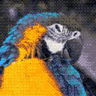

Dithering retrò

Trasforma il livello in grafica pixel retrò: ogni blocco prende un colore da una palette, ad esempio di una vecchia console o di un computer oppure importata, e un motivo di dithering mescola i colori per simulare più tonalità.
Impostazioni
| Impostazione | Tipo | Intervallo | Predefinito |
|---|---|---|---|
| Palette | Tavolozza | – | 16 colori |
| Dithering | Scelta | Nessuno, Rumore, Scacchiera, Bayer 2x2, Bayer 3x3, Bayer 4x4, Bayer 8x8, Punti a gruppi 4x4, Punti a gruppi 8x8, Linee orizzontali, Linee verticali, Linee diagonali, Floyd-Steinberg, Floyd-Steinberg falso, Sierra Lite, Fan, Shiau-Fan, Jarvis-Judice-Ninke, Stucki, Burkes, Sierra, Sierra a due righe, Atkinson | Bayer 4x4 |
| Intensità | Numero | Da 0% a 200% | 100% |
| Dimensione pixel | Numero | Da 1 a 64 | 2 |
| Miscela | Numero | Da 0% a 100% | 100% |